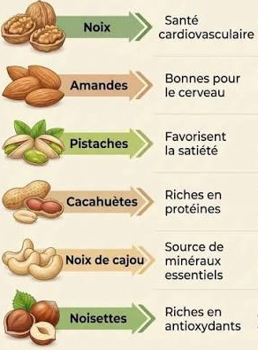

fruits à coque fruits à coque
fruits à coque fruits à coqueLe terme "fruits à coque" désigne les amandes,noisettes,noix de cajou,noix de macdamia,noix de pécan,noix du Brésil et pistaches!
| Fruit à coque | Protéines | Fibres |
|---|---|---|
| Amande | Elevées | Elevées |
| Noix | Elevées | Elevées |
| Pistaches | Elevées | Elevées |
| Noix de cajou | Elevées | Moyenne |
Voici quelques conseils pour intégrer les fruits à coque dans une alimentation équilibrée
| Moment | Conseil | Illustration |
|---|---|---|
| Au quotidien | Evitez les fruits à coque grillés ou salés |  |
| Préfèrez-les naturels | ||
| Pour varier | Variez les fruits à coque.car leur profil liquide est différent |  |
| Les amandes,noisettes,noix,noix de cajou et pistaches sont riches en nutriments. | ||
| Au petit-déjeuner | Incorporez-en dans votre muesli ou porridge d'avoine au petit-déjeuner |  |
| Ils peuvent également ettre ajoutés à un yaourt ou à une salade de fruits. | ||
| Après l'effort | Emportez-en avec vous pour le gouter ou après l'effort | |

 Vers le haut
Vers le haut